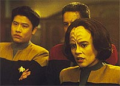
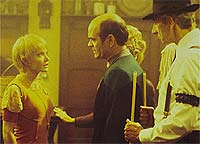
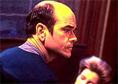
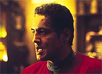
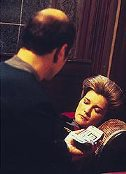

|
MANCHETE
DO EPISDIO
Histria totalmente sem inspirao faz
tripulantes de bobos a
bordo da Voyager
Episdio
anterior | Prximo
episdio
Sinopse:
Data Estelar:
desconhecida.
A Voyager encontra uma estranha onda
de distoro espacial que desativa seus sistemas primrios,
incluindo comunicaes e motores de dobra. Alm disso, a anomalia
parece alterar a estrutura da nave. Como resultado, a capit no
consegue chegar ponte, B'Elanna no encontra o caminho para a
engenharia e os demais tripulantes ficam confusos e frustrados.
 Ao
localizar alguns membros de sua tripulao, Janeway convoca uma
reunio no holodeck a fim de discutir a situao. Tom e B'Elanna
juntam-se para encontrar a engenharia; Chakotay, Neelix, Harry e a
capit tentam chegar Ponte. Enquanto isso, Kes e o Doutor
aguardam no programa ativo do holodeck. Tom e B'Elanna alcanam seu
objetivo, mas os outros no tm a mesma sorte. Chakotay encontra
Tuvok, mas perde Neelix. Janeway quase engolida para a anomalia
por uma estranha fora magntica.
Kim a socorre e a leva de volta para o Doutor, onde a capit fica
inconsciente. O fenmeno continua a distorcer a nave, e Tuvok
estima que a destruio ocorrer em menos de uma hora.
 Chakotay
assume o comando, j que Janeway est incapacitada. B'Elanna ento
tenta um pulso no reator de dobra para salvar a Voyager, mas ao invs
de dispersar o anel que os envolve, acelera e intensifica sua atuao.
Dadas as circunstncias, Tuvok aconselha seus colegas a deixarem a
anomalia se manifestar naturalmente. Sem opes adicionais, os
oficiais tm de enfrentar o destino passivamente.
Depois que a nave totalmente tomada, tudo volta misteriosamente
ao normal e descobre-se que a anomalia era uma forma de vida
tentando se comunicar. Ela absorveu vrias informaes no
computador de Voyager e deixou outras tantas l, em um intercmbio
de conhecimento.
Comentrios:
Falta de inspirao
--trocando em midos, essa a tnica de "Twisted".
Um episdio se equilibra em duas bases --uma boa histria e a boa
interao entre os personagens. Os melhores so aqueles que
conseguem combinar os dois elementos de forma equilibrada. Em "Twisted",
os roteiristas apostaram todas as suas fichas nos personagens --e
perderam feio.
 Os
dilogos at que seguram a ateno at o primeiro bloco. Uma
cena engraadinha aqui, outra ali, Neelix se mordendo de cimes,
oficiais perdidos, e por a vai. Mas quando o fenmeno se repete,
ato aps ato, e nada interessante acontece, e a histria no se
desenrola, o telespectador comea a sentir que est sendo
enganado. Ao fim de 45 minutos, ele se arrepende de ter assistido ao
episdio.
Isso prova uma coisa: impossvel sustentar um episdio em bases
to pouco slidas. A histria to frgil que, no fim, a soluo
para o dilema simplesmente ficar parado assistindo a anomalia
espacial tomar conta de toda a nave! ridculo!
No que exista um problema em reconhecer que existem situaes
contra os quais no se pode lutar. Muito pelo contrrio, um
conceito extremamente salutar --mas no da forma que foi
apresentado. No caso, a soluo foi apresentada simplesmente por
falta de criatividade --os roteiristas no conseguiram bolar uma
concluso melhor para o episdio. Como consolo, pelo menos a soluo
no veio da proposta "tecnobaboseira da semana"
apresentada por B'Elanna Torres, o que seria ainda pior do que o
desfecho escolhido.
 O
fato de a anomalia ser uma forma de vida, sem problemas. Mas no h
nenhuma boa razo para aquele ser tumultuar a Voyager daquele modo.
O arremedo de explicao --o suposto intercmbio de informaes--
certamente poderia ser feito de modo menos traumtico. Alis, nem
se explica o que aconteceu aps a Voyager ter sido completamente
distorcida, nem como o banco de dados foi enriquecido daquele modo.
No pode ter levado mais que cinco minutos para bolar e escrever
esse final.
De todas as dvidas que o episdio deixa, a mais incrvel
entender, em meio a tantos roteiros especulativos e sugestes de
histrias mandadas por escritores free-lancers, como uma premissa
desses consegue chegar a ser produzida.
 Diante
da pfia proposta, at que o roteiro consegue salvar alguma coisa,
inserindo algumas cenas engraadinhas. Exemplos dela so as interaes
do Doutor hologrfico com a "moa" do boteco de Tom
Paris em Marselha e as j mencionadas reaes contidas de Neelix
aos agrados do piloto da Voyager a Kes.
Tambm ligeiramente acima da mdia do episdio a cena em que
Chakotay d uma entortada em Tuvok, dizendo que, com a capit
desabilitada, quem manda na nave agora ele. A cena fica
especialmente divertida quando a estratgia do indgena se mostra
equivocada. A cara de tacho de Chakotay e a expresso triunfal (no
melhor estilo Vulcano) de Tuvok so impagveis.
Citaes:
Tuvok - "When every
logical course of action is exhausted, the only logical course that
remains is inaction."
("Quando todo curso de ao lgico esgotado, o nico
curso que sobra a inao.")
Trivia:
 Neste episdio, nota-se a postura 'materna' de Janeway com relao
ao alferes Kim. Em meio a uma situao fora de controle e
desesperadora aos olhos de um oficial novato, a capit o consola,
dizendo o quanto est satisfeita com seu desempenho na Voyager.
Neste episdio, nota-se a postura 'materna' de Janeway com relao
ao alferes Kim. Em meio a uma situao fora de controle e
desesperadora aos olhos de um oficial novato, a capit o consola,
dizendo o quanto est satisfeita com seu desempenho na Voyager.
Terry Corell faz sua segunda apario como tripulante annima de
Voyager. A primeira foi no episdio "Elogium".
Na verdade, se levarmos em conta a ordem de produo, est a
primeira apario da oficial, j que "Twisted"
foi filmado ainda durante o primeiro ano, embora s tenha sido
exibido na temporada seguinte.
Ficha
tcnica:
Histria de Arnold Rudnick
& Rich Hosek
Roteiro de Kenneth Biller
Dirigido por Kim Friedman
Exibido em 02/10/1995
Produo: 019
Elenco:
Kate Mulgrew como
Kathryn Janeway
Robert Beltran como Chakotay
Roxann Biggs-Dawson como B'Elanna Torres
Robert Duncan McNeill como Tom Paris
Jennifer Lien como Kes
Ethan Phillips como Neelix
Robert Picardo como Doutor
Tim Russ como Tuvok
Garrett Wang como Harry Kim
Elenco convidado:
Larry Hankin como 'Gaunt' Gary
Judy Geeson como Sandrine
Tom Virtue como Baxter
Terry Correll como tripulante
Episdio
anterior | Prximo
episdio
|